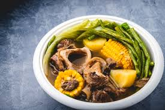

Putok Batok Bulalo Recipe

Ingredients
- Beef Shank
- Cabbage
- Corn Cob
- Onion
- Water
Step-by-step Process
- In a big cooking pot, pour in water and bring to a boil
- Put-in the beef shank followed by the onion and whole pepper corn then simmer for 1.5 hours (30 mins if using a pressure cooker) or until meat is tender.
- Add the corn and simmer for another 10 minutes
- Add the fish sauce,cabbage, pechay, and green onion (onion leeks)
- Serve hot. Share and Enjoy!